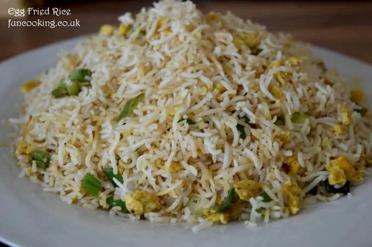

Chinese Fried Rice

Decription:
Egg fried rice … they go with any Chinese gravy or dry dish. I like to add just 1 vege in it and that is green onion, usually people add carrots, capsicum, mushroom in it but I like it simple just with eggs and lot of green onions. Try it my way and you would definitely like it 🙂
Ingredients
- Rice: 2 cups
- Salt: 2 tsp
- White vinegar: 1 tbsp
- Oil: 3 tbsp
Steps:
- First wash and soak rice for half hour…fill a pan with water and let that boil ..then add 2 tsp salt and soaked rice…let them boil for 2-3 minutes or until half done.
Strain them.
- In a pan add 3 tbsp oil in bottom… put strained rice on it and sprinkle 1 tbsp white vinegar …with tight lid on very low heat cook it for 10 minutes….
After 10 minutes stir them and let them cool.
- Beat 4 eggs with 1/4 tsp of salt and black pepper…